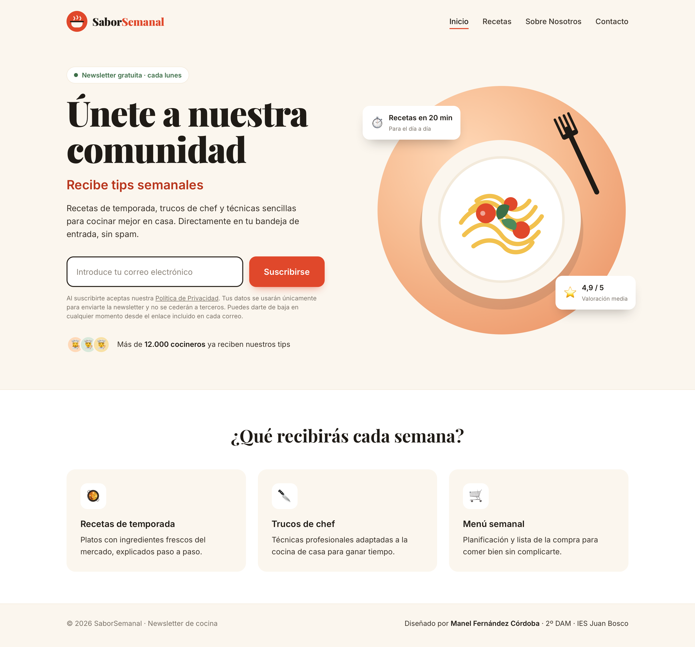
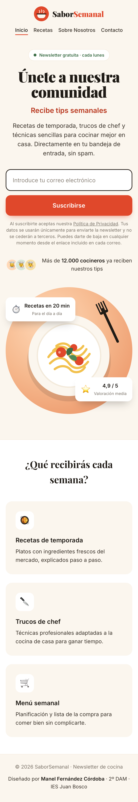

Manel Fernández Córdoba · 2º DAM · Desarrollo de Interfaces · IES Juan Bosco


| ✔ | Título principal grande y en negrita: «Únete a nuestra comunidad». |
| ✔ | Subtítulo más pequeño: «Recibe tips semanales». |
| ✔ | Campo de email con borde oscuro y placeholder «Introduce tu correo electrónico». |
| ✔ | Botón CTA «Suscribirse» en rojo tomate, contrastando con el fondo crema. |
| ✔ | Texto legal pequeño y gris sobre privacidad y tratamiento de datos. |
| ✔ | Nombre completo del autor en el pie de página. |
| ➕ | Opcionales: logotipo propio, menú de navegación (Inicio, Recetas, Sobre Nosotros, Contacto), sección de beneficios, prueba social y diseño responsive. |
Aproximadamente 2 horas, desde la idea inicial hasta el diseño final y la documentación.